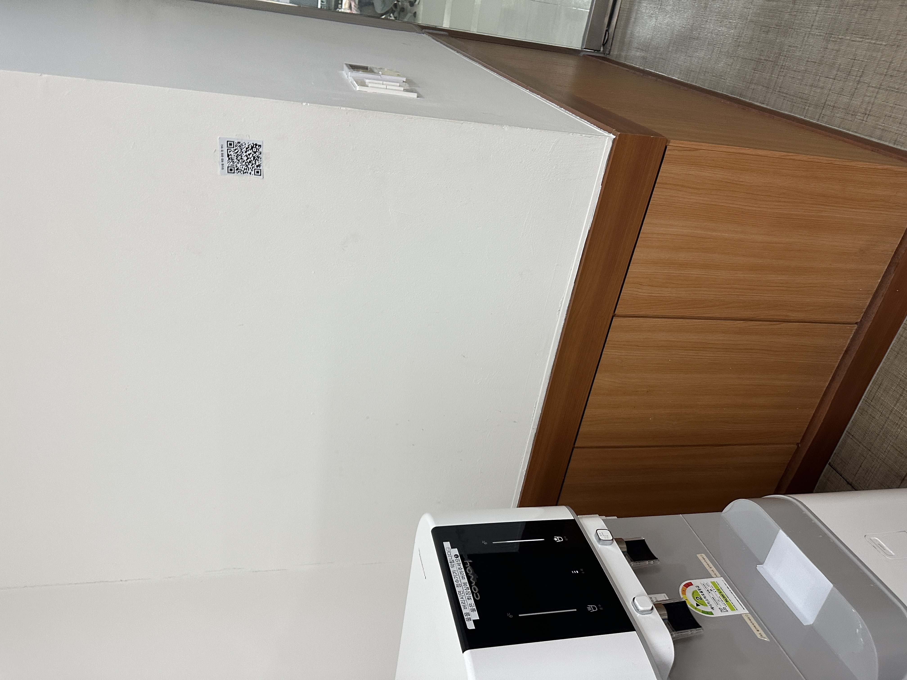

DS1(A) Week 13 · Protocol — Development Phase 2
Charging Station
A water cooler in the undergraduate branch library, turned into a place to read and leave a little encouragement during exam season.
♪ Open the live wall
The protocol of this site
Every place has a protocol — a quiet set of rules about how people move, how long they stay, and what they do. The water cooler in the undergraduate branch library has a clear one: come, fill your cup, and leave.
People do it alone. They do it in silence. It takes about five seconds, and no one looks at anyone. During exam time the protocol is even stronger — tired students come on autopilot, fill water, and go back to studying. Everyone is tired in the same way, but no one shows it and no one shares it.
From a failure to this site
My first try was in the space under the stairs in the Creative Learning Building. The idea looked okay, but the place was wrong. It is a spot people just walk past without paying much attention, so they had no reason to stop and leave something. There was no moment when they slowed down, so almost no one used it.
That failure taught me what I needed: a place where people already stop for a few seconds, with nothing in their hands. That is exactly the water cooler. I don't have to make people pause — the protocol of the place already does it. So I didn't build a new space. I added one small thing on top of a habit that was already there: the place where you fill water becomes the place where you fill yourself.
The four questions
What is the protocol of this site?
Come, fill your cup, and leave — alone, in silence, in about five seconds. During exam season everyone arrives tired in the same way, but no one shows it or shares it.
What did you want to change, reveal, or make visible?
One thing: you are not the only tired person standing here. I wanted to keep the quiet, but turn the lonely five seconds into a small shared moment — a place to get a little encouragement, leave a little for the next person, and pass on one song.
Why this addition, and not something else?
A sign would only be read once and changes nothing. A paper guestbook would feel exposed and need supplies and cleaning. But a QR code + the wall on your own phone fits the protocol perfectly: it lives in the five-second pause, stays private on your screen, is anonymous, and grows over time instead of staying still. It adds to the habit without breaking the silence.
What impact did it bring?
[ Fill after the real run. Answer with what you actually see: how many notes and songs were left, how much thicker the wall got from day 1 to the last day, and whether anyone slowed down, smiled, or stayed a little longer than the usual five seconds. ]
What I installed
I made the simplest version. Just one hand-written card with a QR code, taped next to the cooler at eye level. The web app (the wall) was already working behind the QR. No fancy sign, no long instructions, only one line. I didn't want it to look finished — I just wanted to find out fast what works and what doesn't.
Did it work as intended?
[ Fill this part after you watch real people. Things to answer: ]
- Did people see the card while the water was filling? Or did they only look at the water / their phone?
- Of the people who saw it, how many scanned it? How many only read the wall, and how many actually left a note?
- Where did they stop — at the QR, at the wall, or at "pick a song"?
One thing is already clear. In the Creative Learning Building, I had to give people a reason to stop. At the cooler, the protocol gives me that pause for free.
Is the idea still right, or did the prototype reveal something better?
The pivot was right. Last time the place was the problem, not the idea. But the second prototype probably shows smaller problems:
- Five seconds is short. The cup fills before anyone can read a long sentence. So the card needs to say less — one short line, not a paragraph.
- Reading might be the main thing, not writing. If many people read but few write, that's okay. A full wall makes you want to join; an empty wall pushes you away. So maybe the real point is "give tired people something nice to read," and writing is just a bonus.
- Where I put the card matters more than the words. The best spot is exactly where the eyes look while the water is filling.
What will you change before the real execution?
- Make the card shorter — one line + QR. Put all the explanation inside the page, not on the card.
- Put some notes on the wall first, so the first person doesn't see an empty wall (the empty-room problem from my first try).
- Move the card next to the water, on the line where people look while the cup fills.
- Show the wall first when the page opens. Writing is one easy tap below it.
- (Maybe) try two coolers, to see which spot works better.
The webpage — record, or part of the project?
This decides if the page is worth making. My answer: it is part of the project, not just a record.
A "record" page would be one photo of the cooler and one paragraph about what I did. But the page someone opens while standing at the cooler, with water filling and a phone in their hand — that page is the project. It's not a photo of the encouragement. It's the place the encouragement lives. So the page has two jobs:
- For the person at the cooler: the live wall. Read what others left, and add your own, in the five seconds you have.
- For someone visiting later from anywhere: the same wall, still growing. It shows the encouragement didn't stop when I took the card down.
This also matters for presentation day. When the class walks to the cooler and opens the URL on their phones, they don't just see a report — they stand inside the protocol and add to the wall themselves.
What do they get that they wouldn't have without it? At a normal cooler, your turn ends when the cup is full. But with the page open, the cup fills and you fill too. You leave with a stranger's song, and you know the next tired person will find yours.